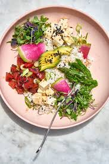

Veggie POKE Bowl
Odin Recipes Home
Avo Veggie Poke

At times, we desire an island inspired treat of a meal, but we know if we broke da mouth we break the bank.
Did you know that you can make a comparable, delicious alternative with a few tomatoes?
Feel free to add or ommit any toppings from our recipe to make your experience personally
appealing. Remember, veggie alternatives don't have to be boring. Furthermore, it is not necessary
to include formulated protein alternatives to deliver a similarly desired flavor.
You won't regret giving it a try for yourself!
Yield 3-4 Servings
Marinade can be prepared ahead of time
to absorb flavor overnight, but for best results
marinade for at least 30 minutes.
Ingredients
Sauce/Marinade
- sesame oil [3 tbsp]
- sriracha [2 tbsp]
- dehydrated seaweed, crumbled [3/4 cup]
- coconut aminos or soy sauce [1/2 cup]
- lime juice [3/4 cup]
- rice vinegar [3 tbsp]
Suggested Veggies + Toppings
- tomatoes [1 cup] , can be supplemented
with watermelon or tofu for different
flavor or texture profile
- avocados [2]
- dehydrated seaweed, crumbled [1/4 cup]
- cucumber [1/2 cup]
- onion crisp [2 tbsp]
- edamame [3/4 cup]
- sesame seeds [2 tsp]
- kewpie mayo [1/2 cup]
- sriracha [2 tbsp]
Suggested Base
For best experience, use white rice as base. Consider enjoying half white recipe
with a leafy green or cabbage. You can also incorporate a cold noodle, such as soba,
as a similarly hearty base or a brown rice for another option. For a lighter choice,
less dense in carbohydrates, the recipe is also enjoyable with greens and cabbage alone.
Recipe
- prepare and mix ingredients for marinade, cover
- divide tomato into cubes roughly 3/4 in. wide
- remove small portion of marinade as sauce for
topping finished bowls
- submerge tomatoes into marinade to allow flavors
to absorb at least 30 min
- assure that rice is premade for recipe or begin preparations
for cooked rice base
- cut cucumbers into about 1mm thick discs
- cut avocadoes in half and slice thin or cube as you desire
- mix kewpie mayo with desired amount of sriracha
- assemble remaining toppings : remaining marinade sauce, seaweed
crumbles, onion crisp, edamame, and sesame seeds
- in dish of choice, spoon in, first, base of choice up to about 1/3 of the way,
- add desired amount of marinated tomato poke to the top of base
- finish poke bowl with recommended toppings or subtract and
supplement anything that suits your liking